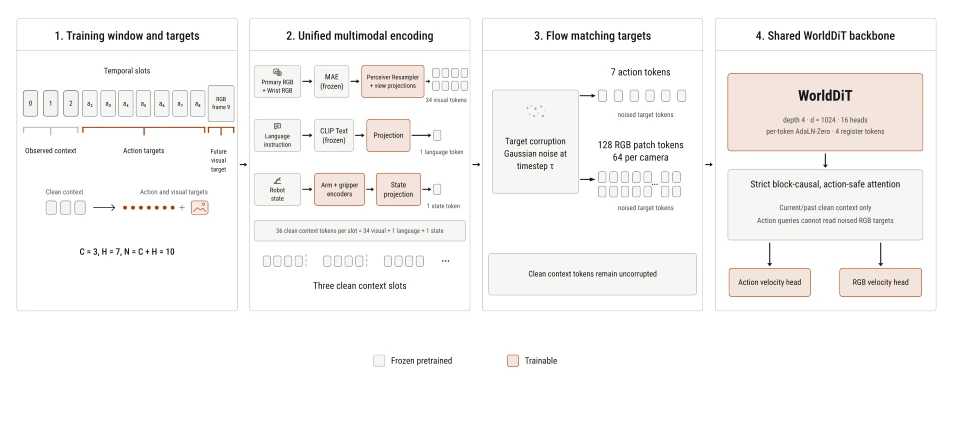
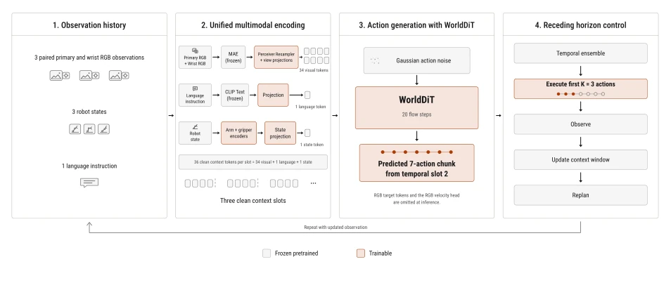
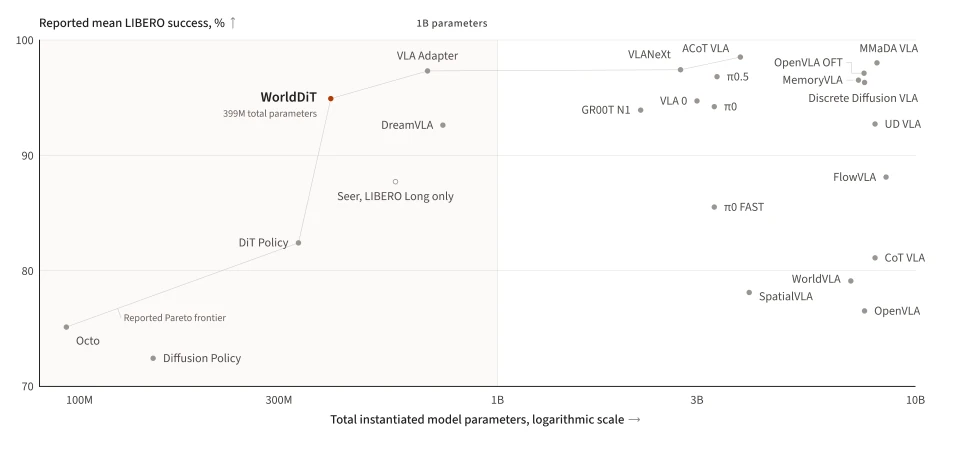
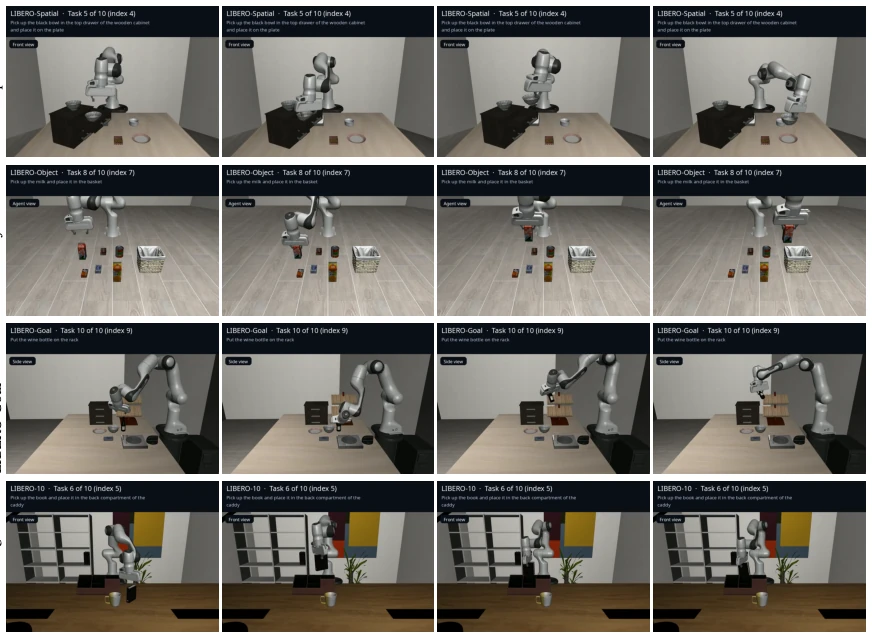

WorldDiT attempts to demonstrate that strong robot control can be achieved without relying on trillion-parameter VLMs; with 399M parameters, it squeezed into the Pareto frontier on the LIBERO benchmark, which is indeed impressive. But do not get too excited, as this was run in simulation, and the auxiliary RGB prediction head is directly discarded during inference, amounting to 'painting a pie during training and eating it during inference'. Although the architecture is unified, essentially it is still Flow Matching plus an auxiliary task, falling short of a true general-purpose world model. The biggest drawback is that it still relies on pre-trained visual encoders, not fully escaping the shadow of 'large model dependency', merely swapping VLM for a combination of MAE+CLIP. For teams pursuing extreme efficiency, it is a good baseline, but to deploy it directly on real robots, we still need to see if there is real-robot verification subsequently. Additionally, its training data relies on simulation environments like LIBERO, generalization ability is questionable, after all, the gap between simulation and reality cannot be bridged just by adding an RGB prediction head.
Current robot policies mostly follow the language modeling paradigm, binding action generation to large pre-trained VLMs (e.g., π0 [2], OpenVLA [11]). Although this mode brings extensive perception capabilities, it also leads to difficulty in distinguishing the contributions of architectural improvements and scale effects. When policies contain billions of parameters, strong control may come from action design, pre-trained backbones, or their combination. The authors question whether a unified diffusion Transformer architecture can be used to maintain strong control performance while combining continuous action generation and auxiliary future visual prediction objectives, without using large pre-trained VLMs as action backbones. Existing methods like Diffusion Policy [5] or Octo [6] are effective but lack world model assistance, while VLA methods are too bloated. WorldDiT aims to explore whether, under parameter constraints, joint modeling of world dynamics and actions can achieve a better cost-performance ratio, providing a baseline for future extension research.
WorldDiT adopts a unified diffusion Transformer architecture, learning action generation and auxiliary future normalized RGB patch prediction. The overall pipeline is divided into encoding, training, and inference. Input is a 10-step time window, containing 3-step observation context (multi-view RGB, robot state, language instructions) and 7-step action targets. Visual and language encoders (MAE, CLIP) are frozen, robot state encoder is trainable, jointly generating multimodal tokens as conditions. Shared DiT backbone receives action tokens and RGB patch tokens with Gaussian noise, predicting their flow velocity. Training objective is the weighted sum of action flow loss and RGB patch flow loss. During inference, only the action generation path is retained, RGB prediction head is removed, achieving replanning by executing the first 3 actions and updating the history window. This design allows the model to utilize world model auxiliary supervision during training, while remaining lightweight during deployment, achieving decoupling of action and visual prediction.

Figure 3 | A ten-step window provides three observed context steps, seven target actions, and one future normalized RGB patch target. Frozen encoders and trainable projections construct multimodal tokens, and one unified WorldDiT backbone predicts action and RGB patch flow velocities.

Figure 4 | The unified backbone encodes three observed context steps and samples a chunk of seven actions through twenty flow steps. We execute the first three actions, update the window, and replan.
Evaluated on the LIBERO manipulation benchmark, containing four suites: Spatial, Object, Goal, and Long. Pretrained on libero_90, each suite independently fine-tuned. Evaluated on 500 simulated episodes. WorldDiT total parameters 399M, average success rate 94.9%. Compared with 24 methods, located on the Pareto frontier between parameters and success rate. Long suite is the hardest, success rate is 91.8%. Results show that SOTA level can be achieved without large VLM backbone, providing a strong baseline for future extension research. But note, some comparison method scores come from cited reports, and model weights are not fully public, limiting full reproduction. Additionally, performance in simulation environments may not be directly transferable to the real world, which is a challenge faced by all simulation-based training policies.

Figure 1 | Reported LIBERO success against total model parameters for 24 methods. The line connects methods with mean success computed across all four suites on the reported Pareto frontier.

Figure 2 | Each row shows four temporally ordered frames from a successful WorldDiT rollout in one LIBERO suite.